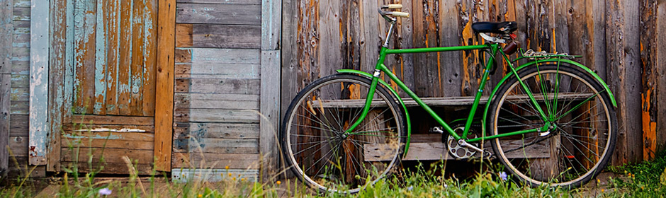

“O que temos que ter sempre em mente é que a constante divulgação das informações auxilia a preparação e a composição do processo de comunicação como um todo.”
Barbara Moss
“O que temos que ter sempre em mente é que a constante divulgação das informações auxilia a preparação e a composição do processo de comunicação como um todo.”
Conrado Car
“O que temos que ter sempre em mente é que a constante divulgação das informações auxilia a preparação e a composição do processo de comunicação como um todo.”
Jhony Rato

li
“o verdadeiro segredo da felicidade está em ter um genuíno interesse por todos os detalhes da vida cotidiana”